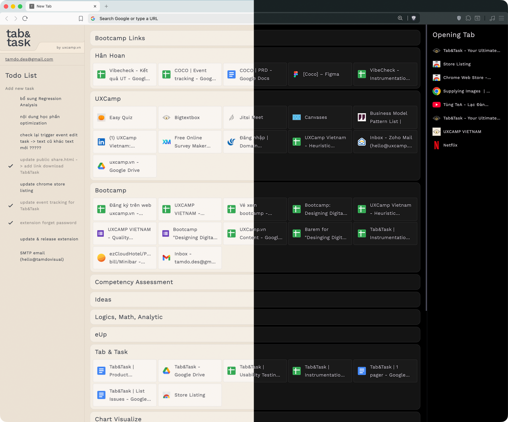

Stop drowning in tabs. Tab&Task brings your workflow into one beautiful, organized space. Manage collections, track tasks, and stay in the flow.
Every feature is designed to keep you focused and organized.
Manage all links into collections by drag-and-drop. Save your workspace and restore it instantly.
Share your collections with your friends and colleagues for better collaboration.
Integrated to-do list that lives where you work. Track your progress without switching contexts.
Powered by Supabase. Your collections and tasks sync across all your devices in real-time.

Tab&Task supports native dark mode. Whether you're working late at night or just prefer the aesthetic, we've got you covered.